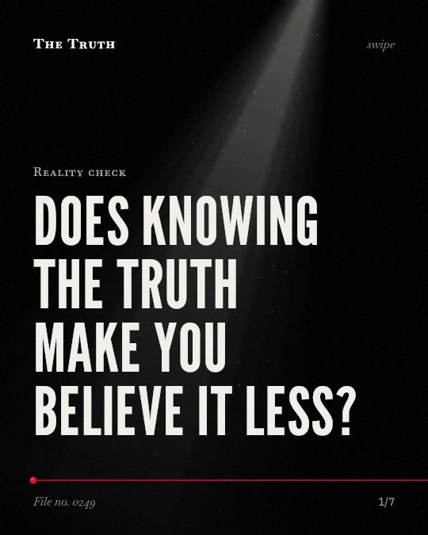

Reality check
Does knowing the truth make you believe it less?

Fear appeals do not backfire.
Research shows no identified circumstances where fear leads to undesirable outcomes.
Established. Several studies combined, or official data. The evidence goes against the popular idea.
What the research found
There are no identified circumstances under which fear appeals backfire and lead to undesirable outcomes.
“Overall, we conclude that (a) fear appeals are effective at positively influencing attitude, intentions, and behaviors; (b) there are very few circumstances under which they are not effective; and (c) there are no identified circumstances under which they backfire and lead to undesirable outcomes.”
Meta-analysis, 2015. Tannenbaum et al., Psychological bulletin.
Fear appeals have a positive effect on attitudes, intentions, and behaviors, with an average effect on a composite index of random-effects d = 0.29.
“Results showed a positive effect of fear appeals on attitudes, intentions, and behaviors, with the average effect on a composite index being random-effects d = 0. 29.”
Meta-analysis, 2015. Tannenbaum et al., Psychological bulletin.
The effect of consensus messages on climate change attitudes was small yet statistically significant and positive (g = 0.09), and was not significantly moderated by political affiliation.
“The effect of consensus messages on attitudes was small yet statistically significant and positive (g = 0.09), and not significantly moderated by political affiliation.”
Meta-analysis, 2022. Rode et al., Environmental Communication.
There is little meta-analytic evidence that consensus messages backfire.
“While conservatives may experience resistance to consensus messages, there is little meta-analytic evidence that consensus messages backfire.”
Meta-analysis, 2022. Rode et al., Environmental Communication.
Information shapes your behavior.
Fear appeals have a positive effect on your attitudes and actions. Consensus messages on climate change also show small but significant positive effects regardless of your politics.
The truth is not a wall.
That may be why you feel more capable of change when faced with facts. You might still feel a sense of resistance, but the evidence suggests the facts are moving you forward.
This part is our reading of the evidence, not a finding.
A warning on a screen.
You see a headline about a rising tide or a looming threat. You feel a pulse in your throat. You read the data. You decide what to do next.
The honest summary
The evidence suggests that providing facts or using fear appeals generally leads to positive outcomes rather than reinforcing original misconceptions.
The study on climate change consensus messages specifically notes that while there is no evidence of backfiring, some individuals may still experience psychological reactance.
What are you waiting to hear?
Sources
- Tannenbaum MB, Hepler J, Zimmerman RS, Saul L, Jacobs S, Wilson K, Albarracín D (2015). Appealing to fear: A meta-analysis of fear appeal effectiveness and theories. Psychological bulletin. Meta-analysis, cited 1,314 times.
- Jacob B. Rode, Amy L. Dent, Peter H. Ditto (2022). Climate Change Consensus Messages May Cause Reactance in Conservatives, But There is No Meta-Analytic Evidence That They Backfire. Environmental Communication. Meta-analysis, cited 29 times.
Also read for this file, not quoted
- Oh et al. (2025). Buffering or Backfiring? A Meta-Analysis of the Effects of Corporate Social (Ir)responsibility on Firm Risk.
- Luo et al. (2011). Guanxiand Organizational Performance: A Meta-Analysis.
- Wrzus & Neubauer (2023). Ecological Momentary Assessment: A Meta-Analysis on Designs, Samples, and Compliance Across Research Fields.
- Schäufele et al. (2025). Nudging meat off the plate in foodservice? A systematic review and meta-analysis identifying moderators in field-based intervention studies.
This file was researched and drafted by software, then checked by rules a model cannot talk its way around: each quote above was matched word for word against the paper, and every number had to appear in it. How files are made.